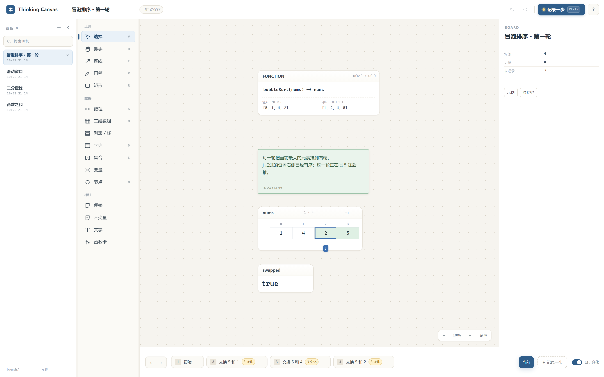

01 / 数据卡片
用格子，而不是手画框
数组、二维数组、列表/栈、字典、集合、变量、节点。带下标、可编辑、可批量粘贴，尺寸由数据决定。
把输入输出、数据结构、指针和每一步的变化摆在一张画布上。工具不执行代码，也不替你决定算法。

纸上的推演有效，但重复劳动太多：重画数组、搬指针、擦掉上一步、找不到哪里变了。
自动可视化工具擅长演示已知算法，却不适合设计自己的函数。所以这里保留自由画布，只把“状态”和“步骤”做成积木。
数组、二维数组、列表/栈、字典、集合、变量、节点。带下标、可编辑、可批量粘贴，尺寸由数据决定。
当前状态始终可编辑；点一下记录，时间线保存这一步。前后翻看，历史步骤只读。
相邻两步逐格比较：变化的格子标黄，变量标黄，指针移动在差异摘要里写清楚。
指针吸附目标、带描边，位置随步骤保存。翻回第 2 步，它就回到第 2 步的位置。
函数卡写签名、输入输出、复杂度目标；绿色便签写循环不变量。翻步骤时一直可见。
画板独立成栏，工具另一栏；可按标题搜索，拖动边界调整宽度并记住。画板统一放在应用旁的 boards/，删除进 .trash/。
点“数组”，双击格子输入 2 7 11 15；或把整块从 Excel 粘进来。
右键格子“加指针”，拖动指针换位置；改值、加字典项、移动节点。
按 Ctrl + Enter 记录一步。点底部时间线回看，变化的格子自动标黄。
Windows 10/11。需要 Microsoft Edge WebView2 Runtime（通常已预装）。源码运行需要 Python 3.11+。